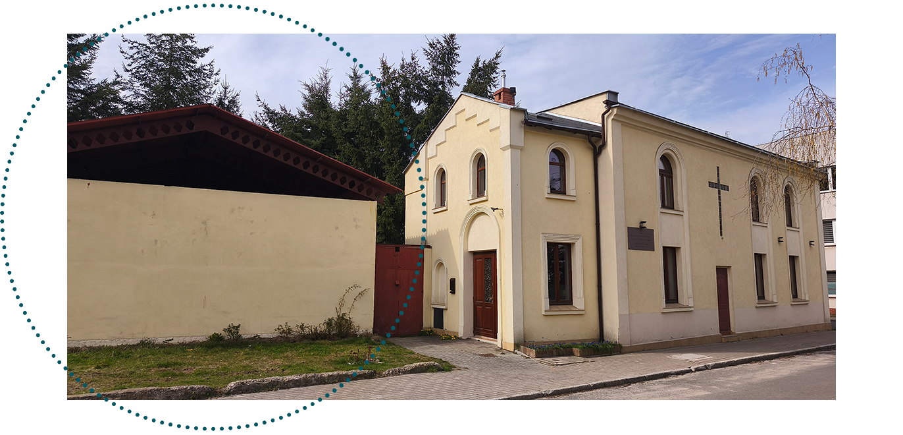

Wspieram
Numer konta bankowego:
66 1090 2369 0000 0001 4246 4771
Jako wspólnota chrześcijan planujemy inwestycję budowy Chrześcijańskiego Centrum Misyjnego, które będzie się znajdować obok budynku naszego kościoła, przy ulicy Wiejskiej 24. Będzie to miejsce otwarte dla ludzi w każdym wieku: dzieci, młodzieży, dorosłych i seniorów - pełne spotkań, warsztatów, wydarzeń i inicjatyw społecznych. Ma służyć ludziom w budowaniu wartościowych relacji i inspiracji do życia z Bogiem. Zachęcamy do wsparcia tej wizji, aby razem stworzyć przestrzeń, z której będzie płynąć nadzieja, pomoc i Dobra Nowina dla kolejnych pokoleń.
